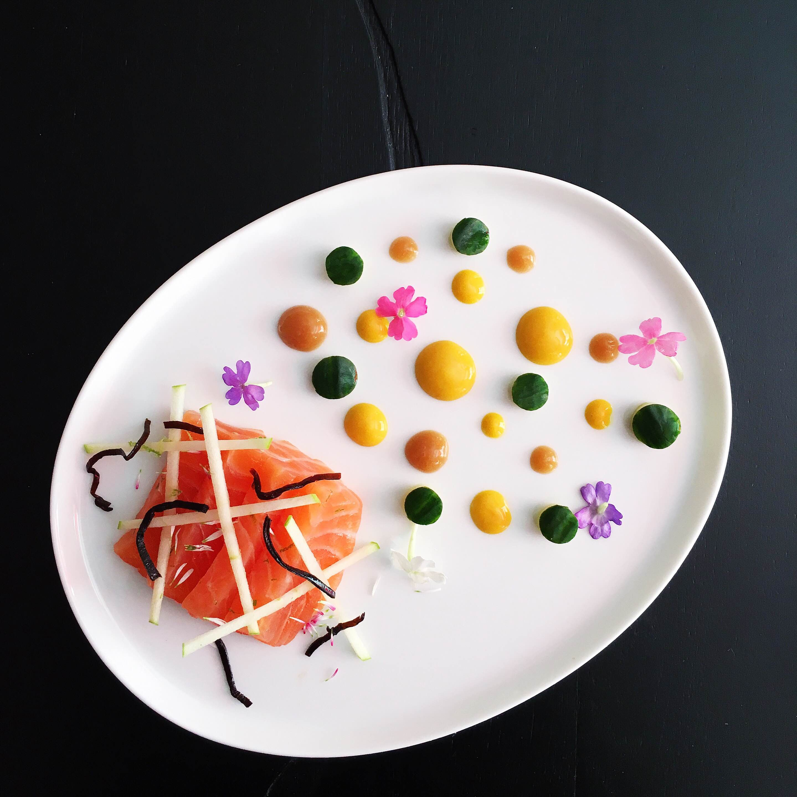
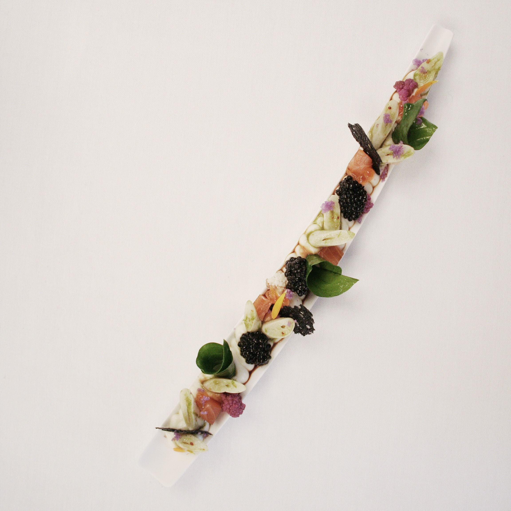
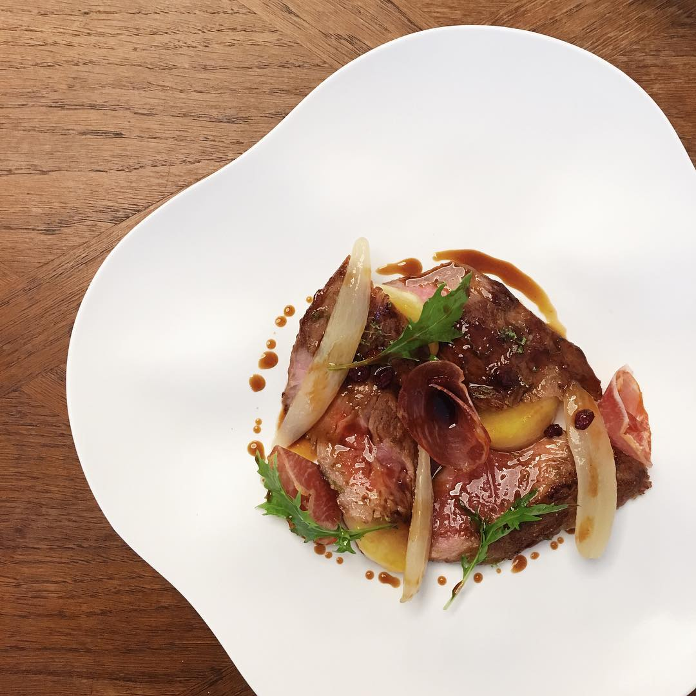
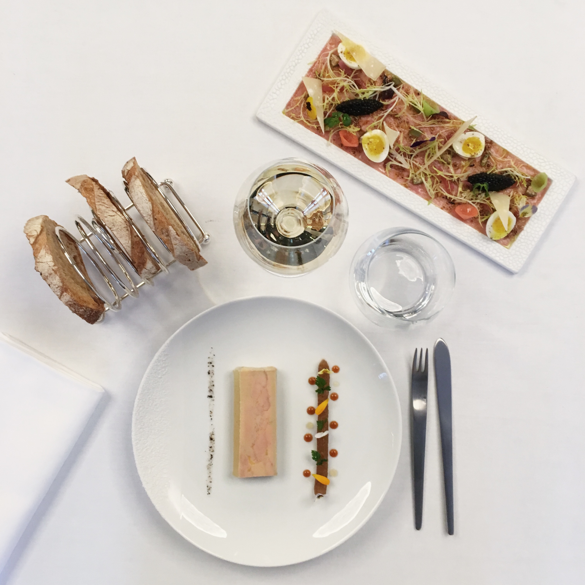

Kavijar bisernosive boje dobija se od ikre jesetre, ribe kojom obiluje Volga.
Kavijar "RED" se dobija od lososa crvenkaste boje. Naš dolazi iz Rusije i poznat je kao IKURA.
Beluga kavijar koji je najpopularniji i najluksuzniji na svetu. Biserno crna boja i poslastica koja se topi u ustima.
Kavijar "YELLOW" dolazi iz Velikih Jezera u Severnoj Americi od bele ribe i žute je boje.